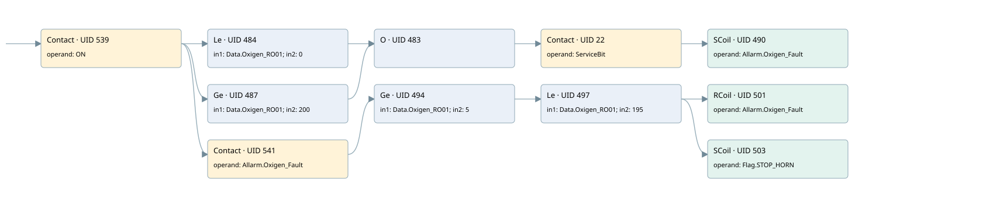

oxigen analyzer out of range
allarms 3 · 검색 색인 순서 4 · 원본 내부 NID 추정 4
백업 PLF 원본의 3168394 바이트 위치에서 복원한 XML. 검색 문서 1982의 객체 키 16102200746b000000000000와 연결했다. 이름 해석 14/14개. 남은 RefId는 상수 또는 미해석 참조다.
연결 구조 다시 그리기
원본 Part/PCon/Wire를 이용한 연결도다. TIA 화면의 래더 배치 또는 실행 결과를 재현한 그림은 아니다. 핀 연결은 아래 표와 원본 XML을 기준으로 읽는다. 노드 위에 마우스를 두면 피연산자 이름을 볼 수 있다.

접점·코일·블록과 피연산자
| Part UID | Gate | Negated 핀 | 연결 피연산자 |
|---|---|---|---|
| 539 | Contact | operand = ON | |
| 484 | Le | in1 = Data.Oxigen_RO01; in2 = 0 | |
| 487 | Ge | in1 = Data.Oxigen_RO01; in2 = 200 | |
| 483 | O | ||
| 22 | Contact | operand = ServiceBit | |
| 490 | SCoil | operand = Allarm.Oxigen_Fault | |
| 541 | Contact | operand = Allarm.Oxigen_Fault | |
| 494 | Ge | in1 = Data.Oxigen_RO01; in2 = 5 | |
| 497 | Le | in1 = Data.Oxigen_RO01; in2 = 195 | |
| 501 | RCoil | operand = Allarm.Oxigen_Fault | |
| 503 | SCoil | operand = Flag.STOP_HORN |
접점 경로를 펼친 조건식
Contact·O/A·비교기의 원본 연결을 읽기 쉽게 펼친 보조 해석이다. POWER는 전원 레일 시작을 뜻한다. 호출 블록·에지·타이머의 내부 동작과 다중 쓰기 순서는 이 표로 실행 검증하지 않았다. 미해석 핀과 RefId는 원문 연결표에서 확인한다.
| UID | 동작 | 대상 | 원본 접점 경로 | 내용 |
|---|---|---|---|---|
| 490 | SCoil | Allarm.Oxigen_Fault | (((ON AND [Data.Oxigen_RO01 <= 0]) OR (ON AND [Data.Oxigen_RO01 >= 200])) AND ServiceBit) | 조건 성립 시 Set |
| 501 | RCoil | Allarm.Oxigen_Fault | (((ON AND Allarm.Oxigen_Fault) AND [Data.Oxigen_RO01 >= 5]) AND [Data.Oxigen_RO01 <= 195]) | 조건 성립 시 Reset |
| 503 | SCoil | Flag.STOP_HORN | (((ON AND Allarm.Oxigen_Fault) AND [Data.Oxigen_RO01 >= 5]) AND [Data.Oxigen_RO01 <= 195]) | 조건 성립 시 Set |
원본 배선 연결
| Wire UID | 동일 Wire 연결 끝점 |
|---|---|
| 543 | Powerrail {} ↔ Part 539.in |
| 518 | ORef 505 (ON) ↔ Part 539.operand |
| 540 | Part 539.out ↔ Part 484.pre ↔ Part 487.pre ↔ Part 541.in |
| 519 | ORef 506 (Data.Oxigen_RO01) ↔ Part 484.in1 |
| 520 | ORef 507 (0) ↔ Part 484.in2 |
| 521 | Part 484.out ↔ Part 483.in1 |
| 522 | ORef 508 (Data.Oxigen_RO01) ↔ Part 487.in1 |
| 523 | ORef 509 (200) ↔ Part 487.in2 |
| 524 | Part 487.out ↔ Part 483.in2 |
| 525 | Part 483.out ↔ Part 22.in |
| 21 | ORef 23 (ServiceBit) ↔ Part 22.operand |
| 24 | Part 22.out ↔ Part 490.in |
| 527 | ORef 510 (Allarm.Oxigen_Fault) ↔ Part 490.operand |
| 528 | ORef 511 (Allarm.Oxigen_Fault) ↔ Part 541.operand |
| 542 | Part 541.out ↔ Part 494.pre |
| 529 | ORef 512 (Data.Oxigen_RO01) ↔ Part 494.in1 |
| 530 | ORef 513 (5) ↔ Part 494.in2 |
| 531 | Part 494.out ↔ Part 497.pre |
| 532 | ORef 514 (Data.Oxigen_RO01) ↔ Part 497.in1 |
| 533 | ORef 515 (195) ↔ Part 497.in2 |
| 534 | Part 497.out ↔ Part 501.in ↔ Part 503.in |
| 535 | ORef 516 (Allarm.Oxigen_Fault) ↔ Part 501.operand |
| 536 | ORef 517 (Flag.STOP_HORN) ↔ Part 503.operand |
식별자 해석 근거 14개
| ORef UID | RefId | 이름 | IdentXmlPart 파일 | 해석 방법 |
|---|---|---|---|---|
| 505 | 1 | ON | 0686-IdentXmlPart.xml | UID/RID + search-text + NID agreement |
| 506 | 52 | Data.Oxigen_RO01 | 0684-IdentXmlPart.xml | UID/RID + search-text + NID agreement |
| 507 | 53 | 0 | 0683-IdentXmlPart.xml | literal candidate: UID/RID/NID + nearby named declarations + search-text agreement |
| 508 | 52 | Data.Oxigen_RO01 | 0684-IdentXmlPart.xml | UID/RID + search-text + NID agreement |
| 509 | 54 | 200 | 0683-IdentXmlPart.xml | literal candidate: UID/RID/NID + nearby named declarations + search-text agreement |
| 23 | 161 | ServiceBit | 0686-IdentXmlPart.xml | UID/RID + search-text + NID agreement |
| 510 | 55 | Allarm.Oxigen_Fault | 0684-IdentXmlPart.xml | UID/RID + search-text + NID agreement |
| 511 | 55 | Allarm.Oxigen_Fault | 0684-IdentXmlPart.xml | UID/RID + search-text + NID agreement |
| 512 | 52 | Data.Oxigen_RO01 | 0684-IdentXmlPart.xml | UID/RID + search-text + NID agreement |
| 513 | 13 | 5 | 0683-IdentXmlPart.xml | literal candidate: UID/RID/NID + nearby named declarations + search-text agreement |
| 514 | 52 | Data.Oxigen_RO01 | 0684-IdentXmlPart.xml | UID/RID + search-text + NID agreement |
| 515 | 56 | 195 | 0683-IdentXmlPart.xml | literal candidate: UID/RID/NID + nearby named declarations + search-text agreement |
| 516 | 55 | Allarm.Oxigen_Fault | 0684-IdentXmlPart.xml | UID/RID + search-text + NID agreement |
| 517 | 16 | Flag.STOP_HORN | 0684-IdentXmlPart.xml | UID/RID + search-text + NID agreement |
검색 코드 보조 자료
참조 명칭을 찾기 위한 자료이며 실행 순서나 AND/OR 관계는 위 연결표로 확인한다.
"on" "data".oxigen_ro01 0 "servicebit" "allarm".oxigen_fault "data".oxigen_ro01 200 "allarm".oxigen_fault "data".oxigen_ro01 5 "data".oxigen_ro01 195 "allarm".oxigen_fault "flag".stop_horn